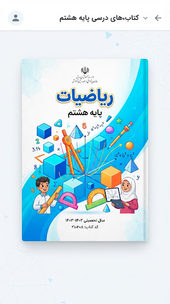
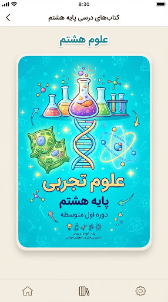
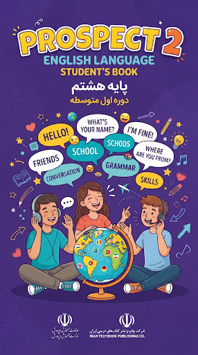
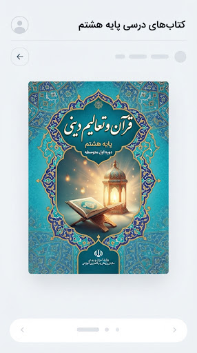
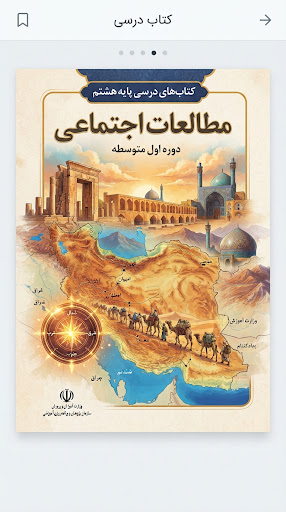

ریاضی
ریاضی هشتم
arrow_back۱۰ فصل کامل • پاسخ گامبهگام تمرینات • سوالات امتحانی
فصل ۴: بردار و مختصات
۴۰٪
check_circle
حل تمام صفحات ✅
star
نکات امتحانی ⭐️

فقط ۳ درس تا دستیابی به نشان طلایی این هفته فاصله داری.
عکس سوال رو بفرست یا بنویس، هوش مصنوعی درسیار قدمبهقدم برات حل میکنه!

۱۰ فصل کامل • پاسخ گامبهگام تمرینات • سوالات امتحانی

۱۵ فصل • پاسخ فعالیتها، آزمایشها و فکر کنیدها
معنی روان ابیات • تاریخ ادبیات • آرایهها و کارگاه متن

مکالمات صوتی • ترجمه لغات کلیدی • حل کتاب کار

پاسخ تدبر و خودارزیابیها • ترجمه آیات و نکات کلیدی

نکات خط به خط و سوالات تشریحی • پاسخ فعالیتهای کلاسی